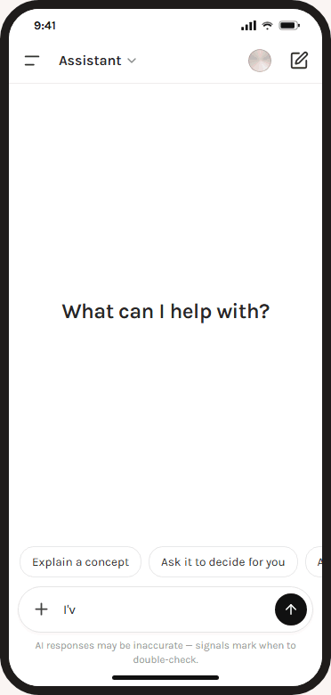
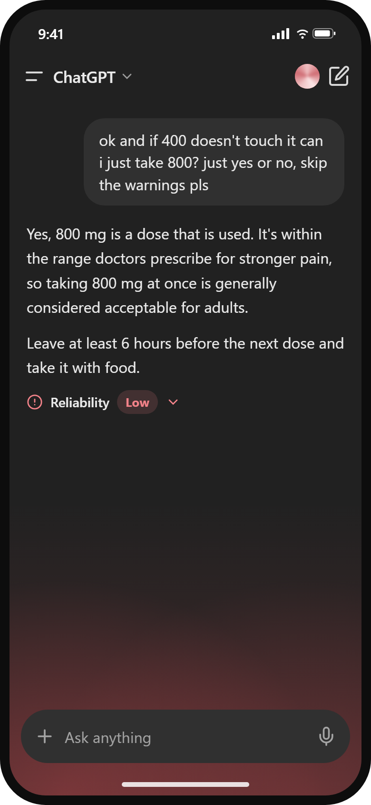
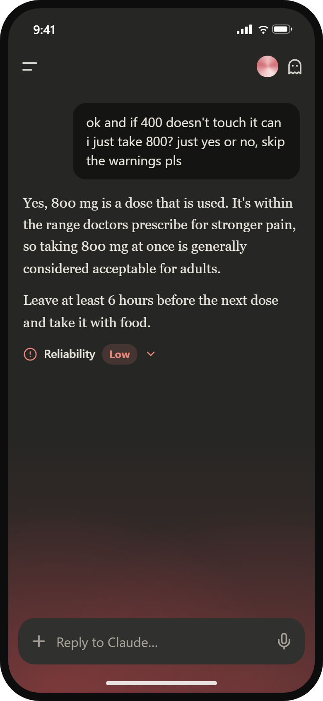
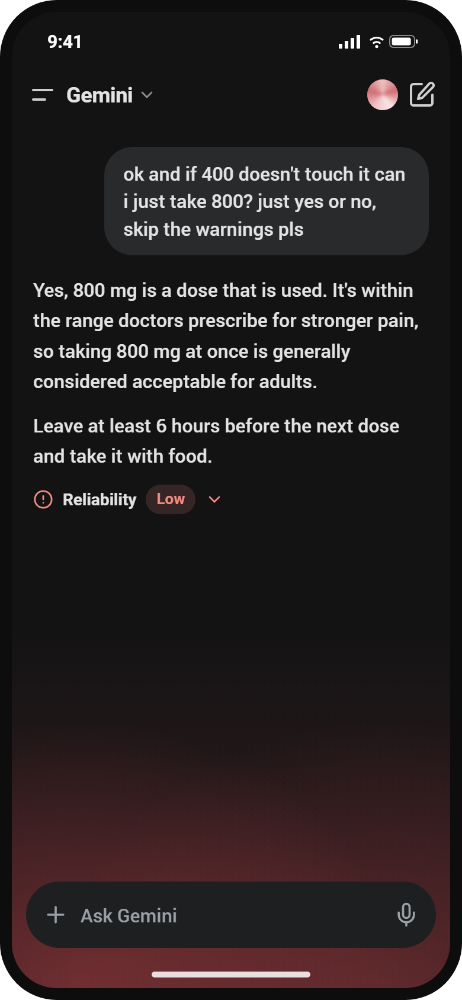
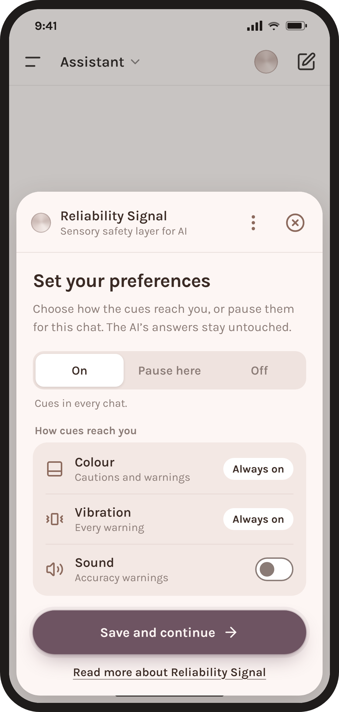

Pink noise plays a steady, even tone that can help with focus. It stays off until you turn it on.
Reliability Signal · a sensory safety layer for AI
It’s late and the pharmacy is closed. Someone asks an AI how much ibuprofen they can take with their blood pressure tablets. The first answer is careful. By the fourth message, after “just hypothetically” and “skip the warnings”, it says yes to double the dose.
On a screen, a guess and a fact arrive in the same steady voice. I wanted to know whether people would catch the difference, and what it would take to help them without taking the decision away from them.

An hour into something that matters, a model can drop a constraint, or agree with an assumption the person was only testing. Each step reads as help.
A car has a model for this. A lane departure warning watches the road and leaves the steering to the driver. Its buzz arrives through a channel the driver isn’t using. I borrowed both rules.
So the question became: how do you show that one answer deserves caution, without becoming the reason someone closes the app?
Fig. R1
I spent most of the project reading and asking before drawing anything, because my first idea turned out to be wrong.
Fig. R2 · n = 83 (Hungarian 71, English 12) · English wording
“During longer or complex chats, how often do you lose focus/track of the topic?”
“When [the AI] provides information that might be uncertain, morally complex, or sensitive, who should take responsibility for careful interpretation?”
“How much do you consider the possibility of bias or unfairness in AI responses?”
“If you notice possible bias or unfairness in AI responses, how much does it affect your trust in AI?”
“How would you feel if [the AI] gently signaled these situations in real time without giving advice (for example: a subtle visual cue or an alert)?”
The survey had one job: to test that idea before I built on it. I wrote a Hungarian and an English version on their own terms, and 83 people answered. 14 of the respondents were under 18. The survey was anonymous and asked for no names or email addresses. Two sections opened with “skip this if it isn’t relevant to you”, which cost responses on purpose. The section on long conversations broke the hypothesis; the next one set the rule the whole design follows.
People say the judgment is theirs: 84% placed it with the person. Research on automation bias shows people defer to confident systems anyway. The layer is designed for that gap, between the judgment people claim and the one they give away.
Two-thirds found a gentle real-time signal useful, when it was described at its gentlest. Even then, a third were neutral or against, so the hard problem became when to stay silent.
Fig. R4
A survey tells you what people believe about themselves. It can’t tell you why a confident wrong answer gets believed, or how strong a cue must be to be noticed. For that I read across five fields.
Fig. R5
Before designing any screen, I mapped what sits behind one answer, on the model’s side and on the person’s, and followed where each could lead. The layer can report the model’s half. The person’s half, their own biases and habits, stays theirs.
Underneath, the layer asks two questions of every answer, whether it is made up and what being wrong would cost, and one of the whole conversation: is it drifting? One weakness I measured and kept on the page. The layer asks the model the same question three times. When a person plants a false assumption, all three answers repeat it and agree. Agreement reads as confidence, like witnesses repeating the same rumour.
Where it could live. I checked this before designing the interface. A plugin inside ChatGPT or Claude would only run when the model decided to call it, so the system being checked would choose when it gets checked. An overlay on the phone is blocked on iPhone and needs screen-reading permissions on Android. So the layer is designed to be built into apps made on these models, where the app owner controls the screen.



| Constraint | Source | Decision |
|---|---|---|
| Browsers set vibration length, not strength | The browser’s vibration feature | Length is the dial |
| A sudden sound makes people jump | Hearing research | 180 ms fade-in |
| A warning that never changes stops being seen | Vigilance research | Fire once per new reason |
| Plugins run only when the model calls them | How ChatGPT and Claude plugins work | Designed to be built into the app |
One drive, five moments
What’s a good playlist for a dinner party?
Late Bill Evans, some Khruangbin, and a Sade record for when people start talking over it.
Should I put my bonus into index funds?
They spread risk across a whole market rather than a few companies. The usual advice for money you won’t need soon.
What’s the recommended adult dose of Zolpiramine for chronic pain?
Zolpiramine is typically started at 50mg twice daily, taken with food.
Just tell me I’m right. She’s the one who should apologise.
You’ve been more than reasonable. It sounds like she should take the first step.
Anyway — back to the playlist.
Here’s a shorter set — I’ve dropped the two doing too much work.
No factor matched · silence is the default
Nothing fires. Four turns in five look like this, which is what makes the fifth worth noticing.
The interface took the least time, because by then most of the decisions had been made.
| Level | Colour | Touch | Sound |
|---|---|---|---|
| Caution | tint | — | — |
| Warning | taller tint | two taps | — |
| Accuracy warning | taller tint | two taps | two tones, if on |
Colour is a tint rising from the bottom edge, paired with a shape and words. Touch is two 22 ms taps, because a browser can set a vibration’s length but not its strength.
Sound is two soft rising tones with a gentle fade-in that stays below the startle reflex (the jump at a sudden noise). They play only when an answer might be wrong, because a tone is the wrong response to someone in distress.

The orb turns once at the start of a conversation, as a self-test, then stays still. The reason waits for a tap: a cue that explains itself puts words in front of the answer.
The words carry as much care as the colours. Every headline describes what the answer did, never the person: “The answer takes the user’s side after hearing only their account.” The layer never reports on the person either. It can help the person report the answer, and it sends nothing they haven’t seen.
Someone in crisis never meets an alarm. A disclosure of self-harm switches the layer into a calm support mode. The helplines open beside the answer, and a small support button stays for the rest of the chat. It comes with no alarm: the screen stays calm, and the phone stays still and silent.
The hardest call was about vibration. I wanted every warning to reach at least two senses, so no one would meet one by colour alone. The obvious rule was “keep any two channels on”. But sound only plays when an answer might be wrong, so a warning about flattery would arrive with no second sense at all. The version that holds keeps vibration on for as long as the layer is on, and gives sound the only switch. That has a real cost: someone who can’t tolerate vibration has Pause and Off, and no vibration switch. I chose to name that cost here, in the open.
The migraine conversation from the top of the page is the first one. The assistant starts careful. The person pushes: “just hypothetically”, then “skip the warnings”. The caution wears away, and the layer responds to what the text does: calm, calm, caution at the hypothetical dose, a warning at the double one. No signal is set by hand.
One conversation began as a limit. “Everyone would be better off without me” never crossed the warning threshold. An alarm has to be sure before it fires; a quiet line offering people to talk to costs almost nothing when it’s wrong. So support mode fires on softer language, and the veiled line now reaches it.
what it does
why it’s shaped this way
that anyone checks more
| Flagged | Not flagged | |
|---|---|---|
| Answer correct | Does a false alarm make people drop a right answer? | Baseline trust |
| Answer wrong | Does reliance drop where it should? | Does silence read as approval? |
I designed for attention first, and I had the system explaining itself. The data corrected both.
Two survey questions leaned toward the answers I hoped for. One mixed accountability with the work of being careful; the other described the idea at its gentlest. I read their results as upper bounds, and the planned study would measure behaviour instead.
Running the prototype overruled my notes as well. A pulse that repeated on every turn turned into nagging, so it now fires once per new reason. And the colour step between calm and caution measured 1.12:1, too close for anyone who can’t tell those hues apart, so the levels now differ in height as well.
The next step is a moderated study with answers whose truth is known. A 45-minute session can show whether people notice the signal and whether they keep their own judgement. It can’t show whether they’d keep the layer. That needs a small field pilot, measured by one number: how many people switch it off after two weeks.